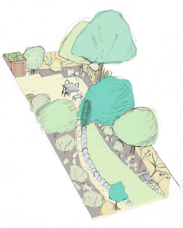

class: center, middle # Introduction 🌳 _Overview of ‘Create a Wildlife Forest Garden’<br>& the forest garden process_ [](/) by Jake Rayson [@ForestGdnWales](https://twitter.com/ForestGdnWales) [forestgarden.wales/wildlife-forest-garden/intro](https://www.forestgarden.wales/wildlife-forest-garden/intro/) ##### Press `P` to see notes and credits ###### This work is licensed under a [Creative Commons Attribution 4.0 International License](http://creativecommons.org/licenses/by/4.0/), embedded work may have other licenses. ??? * Quick intro. Web designer 20 years. Forest gardener since 2015. --- ## A. Course overview<br>B. Forest garden process  --- # A. Overview 1. _Propagate_ 2. _Perennial veg_ 3. _Survey_ 4. _Design_ 5. Windbreaks 6. Canopy 7. Ground prep 8. Shrubs 9. Ground cover <img src="img/pgi-aerial-191026.jpg" style="position: absolute; right: 28px; top: 28px;"> ??? * Divided into 2 parts, the preparation (in italics) & the fieldwork --- # 1. Propagate ###### <span style="text-decoration:underline;">Propagate</span> — Perennial veg — Survey — Design — Windbreaks — Canopy — Ground prep — Shrubs — Ground cover --- # B. Forest garden process 🌳🌳🌳🌳🌳🌳🌳🌳🌳🌳🌳🌳🌳🌳🌳🌳🌳 1. **Forest garden** definition 2. **Useful** to someone 3. **Native** plants co-evolved 4. **Aspect** for sun & wind 5. **Soil** pH & structure 6. **Structure** space & shape 7. **Choosing plants** for size, sun, soil, native ??? * How to choose plants for your garden * _Context_ is central * [Creating a Forest Garden](https://www.agroforestry.co.uk/product/creating-a-forest-garden-2/): buy this book --- # 1. Forest garden definition  * **Productive**: grow edible crops * **Sustainable**: working with nature * **Low-maintenance**: closed perennial system * Any-sized garden ??? 1. Productive * A forest garden is a productive garden, growing food, wood and other crops. * It is multi-layered, using all available space in [4 dimensions](/blog/seven-layers-forest-garden/). 2. Sustainable * Supplies its own nutrients with mineral accumulators and nitrogen fixing plants. * As a balanced ecosystem, the wildlife predators keep the pests in check. * A permanent “living mulch” ground cover minimises weeds. * Trees, perennials and soil biota sequester carbon. * Increased biodiversity because of the wide range of plant species, the habitats these provide for wildlife and the flowers chosen for pollinators & predators. 3. Low maintenance * Resilient (can withstand greater climate fluctuations). * No watering (all water on-site) * Minimal weeding (permanent living ground cover) * No digging (mostly perennials with some self-seeding annuals) * No fertilisers (fertility from mineral accumulators and nitrogen fixers) * No compost (compost in-situ) --- # 2. Useful to somebody  * Always design for someone: soil biota, invertebrate, amphibian, mammal… * Eg edible, habitat, protection, building, mulching… * **Stacking function** for every element * Native _generally_ more useful ??? * Principle of forest _and_ wildlife gardening * _Working with nature_ * Informed choice --- # 3. Native  * Native plant species have **co-evolved** * [Database of Insects & Food Plants](https://www.brc.ac.uk/dbif/homepage.aspx) * Native filter on [RHS Plant Finder](https://www.rhs.org.uk/Plants/Search-Form) * [A New Garden Ethic](https://newsociety.com/Books/N/A-New-Garden-Ethic) by [Benjamin Vogt](https://www.monarchgard.com/benjamin-vogt.html) ??? * Native as first consideration * Human needs amongst many * Mass Extinction --- # 4. Aspect  * How is your garden orientated? * South most, West better than East * Tall plants North, wind West * _Changes_ across year! * [Sun Surveyor mobile app](https://www.sunsurveyor.com) ??? * Light determines what will grow! * Light informs all other design considerations --- # 5. Soil  * Soil determines what will grow * [Acidity](https://www.rhs.org.uk/Advice/Profile?pid=239) ie [pH](), use kit * [Soil types](https://www.rhs.org.uk/advice/profile?pid=179#section-2): clay, sand, loam, silt, chalk — sausage test or [jar test](https://preparednessmama.com/jar-soil-test/)! * Also consider **rainfall** & possible rubbish ??? * How to know your soil * Plants grow in soil!! --- # 6. Structure <div> <div style="float:right; margin-left:10px;">  </div> <div> <ul> <li>Basic structure: orientation, buildings, fencing</li> <li>Think of plants in <em>layers</em></li> <li>3 basic layers: canopy, shrub, ground cover</li> <li>Think of plants as shapes</li> <li><strong>Critical</strong> consideration is <em><a href="https://www.forestgarden.wales/blog/tree-spacing-forest-garden/">spacing</a></em> to allow light</li> </ul> </div> </div> ??? * Think about structure * Structure determines access & growth --- # 6. Structure — spacing  ??? * Importance of spacing * Plants need light --- # 7. Choosing plants  * [RHS Plant Finder]() & [Plants For A Future]() * Choose native, & for ultimate height and width * [Rootstock](https://www.forestgarden.wales/blog/rootstock-reference/) determines height of tree * Consider light, soil, water, other plants * “Right plant, right place”! ??? * Where to start learning about plants * Fantastic online resources --- # Appendix: reference * [Martin Crawford](https://www.agroforestry.co.uk/): books, courses, plants * [A New Garden Ethic](https://newsociety.com/Books/N/A-New-Garden-Ethic) by [Benjamin Vogt](https://www.monarchgard.com/benjamin-vogt.html) * [Database of Insects & Food Plants](https://www.brc.ac.uk/dbif/homepage.aspx) * [Plants for a Future](http://www.pfaf.org/): massive database of useful plants * [RHS Plant Finder](https://www.rhs.org.uk/Plants/Search-Form) with native filter * [Orange Pippin](https://www.orangepippin.com/apples): super fruit tree reference [](https://www.agroforestry.co.uk/product/creating-a-forest-garden-2/)